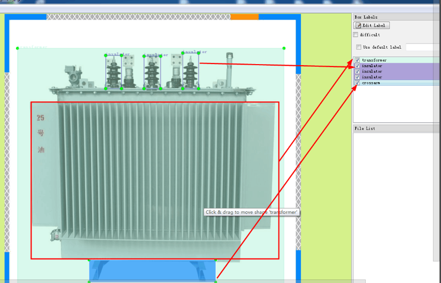
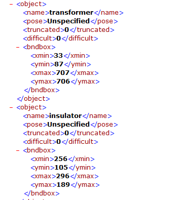
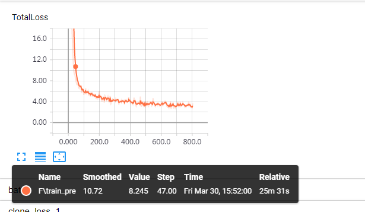
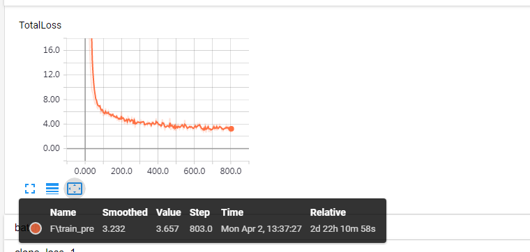

* RCNN模型（object—detection以下简称obdt)；
* LabelImg；
* 数据集1（包含40张图片的测试集，10张图片的验证集）；
* 数据集2（包含80张图片的测试集，20张图片的验证集）；
* 数据集3（120test，30val）
说明在前：最大数据量也是150张，是在将近9000张图片中（网上爬取的数据）剔除剩下，原因：元素特征清晰的照片对照片要求很高！
论证在增大数据量的情况下，能使RCNN模型元素分类更加详细，定位更加准确，精度更高；再在此前提下，希望得到数据部门的支持，制作更多的数据标签，来支持‘图形识别’研究的进行。
1、使用LabelImg制作数据集
obdt模型使用监督学习的方法，所谓监督学习简单描述就是在机器学习过程中，给机器固定的目标，含有独有特征的元素的
划成特定目标类。故而引出了标签文件的制作，使用LabelImg将图片中的特征框选出来，再打上标签，并为标签起名字（如下图：框出变压器部分，并命名为变压器）

生成的标签文件如下：

2、使用obdt接口生成能被tensorflow读取的数据集：
使用接口create_pascal_tf_record4define.py制作成数据集1，数据集2，数据集3
3、调用obdt接口时候生成对应的模型文件
关于神经网络模型如何运行原理这里不做说明
4、使用不同的模型的准确率与分类详细
4.1、调用tensorboard，查看不同数据量的数据集训练完成后的损失函数的smoothed，这里解释一下tensorboard，tensorflow做的
每一步操作都会都会记录在计算图中，而tensorboard实现了每一操作的可视化，训练过程中的每一步使得参数的变化都被记录下来，如下图，
随着时间的推移，损失函数下降，标签越来越拟合目标：


注:
Value:表示损失函数loss的值;
Step:表示训练到多少步;
Smoothed:表示平滑系数，当value的值很接近smoothed的值以后，损失函数图像趋于一稳定值
附注：
上面的图像为数据集3的训练效果,训练一个模型平均花费10h,数据集数据量越大的情况下，训练时间越长，损失函数更低(数据集1与数据集2
2的tensorboard图像，已经被数据集的tensorboard覆盖，只能用数据集3说明情况；但是三个数据集数据量差异不是很大，训练完成时间只有几十分钟上的差异，但是针对损失函数，数据集1为 7.3，数据集2为 4.5s，数据集3为3.2s，
训练25分钟的时候，损失函数为8.245, 5小时后损失函数下降为3.2,并不再发生波动。
4.2、使用接口验证测试集数据的准确率
验证上面三个数据集的准确率以及分类详细情况：
4.2.1 数据集1
4.2.2 数据集2
4.2.3 数据集3
数据集1:包含40张图片的测试集，10张图片的验证集;
数据集2:包含80张图片的测试集，20张图片的验证集;
数据集2:包含120张图片的测试集，30张图片的验证集;
1、随着数据集数据量的增加，能够使识别的绝缘子数量增加，即可分类更详细。
2、受特征是否明显的因素影响，数据集大的情况下变压器识别准确率会提升，即会影响识别准确率。
3、由于最大数据量还是过少的情况，而变压器与绝缘子都具有的相同特征部分，会出现N/A(绝缘子与变压器都有类似褶皱的特征，当数据量足够，标签制作良好的情况下，可以避免!)